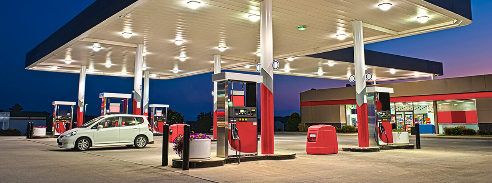

Sanayi Şirketleri Neden Elektriği GELKA Enerji'den Almalı?
Sanayi işletmeleri için sözleşme öncesi tüketim analizi, demant aşımı değerlendirmesi ve doğru elektrik fiyat teklifi.
Devamını OkuSanayi, otel, market ve ticari işletmeler için elektrik tedariki hakkında bilmeniz gerekenler
 Sanayi
Sanayi
Sanayi işletmeleri için sözleşme öncesi tüketim analizi, demant aşımı değerlendirmesi ve doğru elektrik fiyat teklifi.
Devamını Oku AVM
AVM
Klima, asansör, yürüyen merdiven yüklerinin analizi ve ceza riski yönetimi.
Devamını Oku Otel
Otel
Tek veri dili, şubeler arası karşılaştırma ve şeffaf fiyatlama avantajları.
Devamını Oku Market
Market
Soğutucular, aydınlatma ve kasa sistemleri. Gün içi müşteri trafiği ve mevsimsel farkların etkisi.
Devamını Oku
AkaryakıtGece-gündüz aydınlatma, market yoğunluğu ve saatlik tüketim davranışı analizi.
Devamını OkuPompalar, market soğutma ve aydınlatma yüklerinin faturaya etkisi.
Devamını Oku Sanayi
Sanayi
Endüktif, kapasitif ve reaktif güç kavramları. Sözleşme öncesi reaktif değerleri analizi.
Devamını Oku Restoran
Restoran
Gün içi yoğun saatler, hafta sonu farkları ve mevsimsel dalgalanmalar.
Devamını Oku Sanayi
Sanayi
Organize sanayi bölgeleri için sözleşme öncesi tüketim analizi ve şeffaf elektrik fiyatlandırması.
Devamını Oku Sanayi
Sanayi
Tahmin değil veri ile enerji yönetimi. Sözleşme öncesi veri okuma ile doğru fiyat teklifi.
Devamını Oku Rehber
Rehber
Sadece birim fiyata bakmak, tüketimi sabit varsaymak, saatlik veriyi görmezden gelmek ve daha fazlası.
Devamını Oku Plaza
Plaza
Reaktif-endüktif analiz, ortak alan tüketimi ve şeffaf maliyet yönetimi.
Devamını Oku Otel
Otel
Havuz tipi elektrik maliyetini nasıl etkiler? Otel elektrik tüketim analizi.
Devamını Oku Restoran
Restoran
AVM içi, cadde restoranları ve paket servis yoğunluğu farkları. Şube bazlı tüketim analizi.
Devamını Oku Perakende
Perakende
Cadde mağazası, AVM mağazası ve metrekare farklarının tüketim davranışına etkisi.
Devamını Oku Market
Market
Aynı anda devreye giren soğutucular, pik saatler ve aydınlatma yüklerinin etkisi.
Devamını Oku Cafe
Cafe
Kahve makineleri, soğutucular ve uzun açık kalma saatlerinin etkisi.
Devamını Oku Sağlık
Sağlık
7/24 kesintisiz tüketim, MR/BT/ameliyathane yükleri ve reaktif-endüktif analiz.
Devamını OkuSözleşme öncesi tüketim analizi ile size özel fiyat teklifi alalım
Ücretsiz Teklif Al